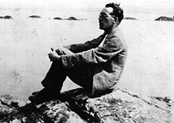

Biography |
Quotes |
Papers |
Misc.

Quotes
In a story called 'Don Juan's Temptation', the character Gussie says: "I sometimes think young people are the loneliest creatures on God's earth. You wake up from a nice, well-ordered, explainable world and you find eternity stretching all round you, and no one, priest or scientist or anyone else, can tell you a damn thing about it. And there's this queer thing going on inside you that gives you a longing for companionship and love, and you don't know how to satisfy it. I used to go out at night, looking up at the stars, and thinking if only I could meet a nice understanding sort of girl it would all explain itself naturally."
--------------------
"For me there has always been in imagination," O'Connor wrote, "a stage beyond death - a stage where one says 'I have no home now'."
--------------------
"A great novel doesn't exist in a writer; it exists in a Society. To produce a novel you need a Society with an aristocracy - of intellect or birth."
--------------------
"It's only a place where one has lived for the greater part of one's life that one can have the friends who become part of one's inspiration. I don't mean who suggest subjects for stories - most of my pals don't even notice them; I mean, who are the sort of thing which is ultimately one's reason for writing stories at all. I write very little about the constricted sort of life you very properly criticise; Sean (Ó Faoláin) does it more than I, because Sean is that sort of objective, socially-conscious, critical writer."
(from a letter to Dermot Foley 1952)
--------------------
"What the storyteller looks for, he once said, is that 'lonely lyrical thing you feel at a graveside, and the first time you fall in love. It doesn't last, of course.' "
(from 'Voices' by James Matthews)
--------------------
When asked by his son Myles, what he wanted to do in his stories, he replied: "Lay bare a person's fundamental character in one moment of crisis."
(from 'Voices')
--------------------
In a letter to Evelyn:
"One should NEVER NOT FOR ANYTHING break a spell of writing! It’s impossible to find the original spyhole in the immense wall of reality."
Top